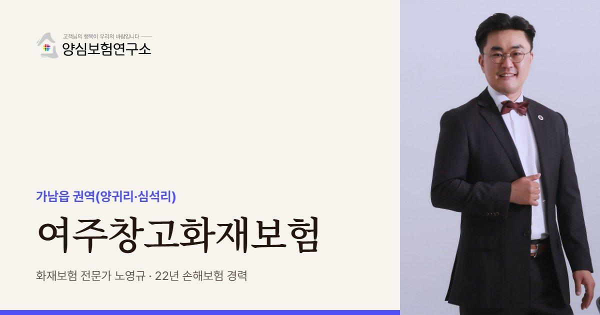

여주는 새 창고가 많아 준공일과 입주일 사이에 보험이 비는 기간이 없는지부터 봅니다. 임차 입주라면 임대인이 든 보험의 목적물도 같이 확인합니다.
여주 안내
여주, 왜 창고화재보험이 중요할까요?
여주창고화재보험은 여주시 가남읍 일대에 들어서는 물류창고가 화재로 건물·재고·설비를 잃거나 남의 물건을 태웠을 때를 대비하는 보험에 해당합니다. 이천에 이어 경기 동부 물류의 다음 무대로 떠오른 곳이라, 이미 운영 중인 창고보다 짓고 있거나 막 입주한 창고가 많은 것이 특징입니다.
쿠시먼앤드웨이크필드는 2025년 보고서에서 가남읍을 여주의 핵심 물류 클러스터로 꼽았고, 최근 4년 동안 공급이 약 3배로 늘었다고 분석했습니다. 가남읍 양귀리에는 연면적 약 28.4만㎡ 물류센터가 2024년 7월 착공해 공사 중이고, 심석리에는 약 1.3만 평 규모 상온센터가 운영되고 있습니다.
여주가 주목받는 이유는 임대료입니다. 이천보다 비용 부담이 적어 3PL이 많이 들어오고, 여주 아웃렛과 연결된 패션 브랜드 수요도 있습니다. 옷과 신발은 부피에 비해 잘 타고 연기에도 약해, 불길이 닿지 않은 물건까지 팔 수 없게 되는 경우가 많습니다.
신축이 많은 지역에서는 공사 단계와 운영 단계 사이의 공백을 조심해야 합니다. 시공사가 든 공사 보험이 끝나는 날과 창고주의 화재보험이 시작되는 날이 어긋나면, 그 사이 들여온 재고는 어디에도 기대지 못할 수 있습니다. 준공 서류가 늦게 나오거나 입주 일정이 당겨지는 일도 흔해서, 날짜를 여유 있게 겹쳐 두는 편이 안전합니다.
주요 위험
여주창고화재보험에서 먼저 볼 위험
준공 전후 보험 공백
공사 보험 종료일과 운영 보험 개시일이 맞물리는지 꼭 확인합니다.
의류·신발 연기 피해
그을음과 냄새가 밴 패션 상품은 판매가 어려워 손해가 커집니다.
여러 임차사가 나눈 센터
대형 센터를 층·구역별로 나눠 쓰면 옆 구역 화재가 내 재고로 번질 수 있습니다.
지게차 배터리 충전
충전 구역을 적재 구역과 떼어 두지 않으면 작은 불씨가 크게 번집니다.
외곽 창고의 야간 도난
주변이 한적한 신축 센터는 야간 경비와 출입 기록이 약해지기 쉽습니다.
임대차 원상복구 책임
불이 나면 임차인이 건물 복구 비용을 떠안을 수 있어 배상 한도를 챙깁니다.
※ 실제 보장 여부와 한도, 면책 사항은 가입하는 상품의 약관과 창고 현황에 따라 달라집니다.
방문 상담
여주 직접 방문 상담
여주 가남읍은 새 센터가 많아 입주 전에 찾아가 소방 준공 서류와 임대차계약서를 함께 봅니다. 양귀리·심석리와 여주 IC 주변 창고까지 방문합니다.
꼭 확인할 점검 항목
여주창고화재보험 점검 리스트
- 입주 예정일과 보험 개시일재고가 들어오는 첫날부터 보험이 걸려 있는지 날짜를 맞춥니다.
- 임대인 보험 목적물건물만 들었는지, 시설까지 들었는지 임대인 쪽 증권을 확인합니다.
- 패션 상품 보관 방식옷걸이 보관과 박스 보관의 비율, 포장재 양을 정리합니다.
- 구역 사이 방화벽옆 임차 구역과 방화구획으로 나뉘어 있는지 도면으로 봅니다.
- 야간 경비 체계CCTV, 출입 통제, 무인 경비 계약 여부를 적어 둡니다.
고객 후기
실제 계약고객 만족 사례


※ 실제 계약고객과 나눈 카카오톡 상담과 후기 일부이며, 개인정보는 가렸습니다.
지역 상담 Q&A
여주창고화재보험 Q&A
여주 신축 물류센터에 입주하는데 언제 보험에 들어야 하나요?
재고가 처음 들어오는 날 전에 가입해야 합니다. 입주 준비 중 들여온 집기와 재고도 화재 위험에 놓이기 때문에 계약 개시일을 입주일보다 앞에 두는 것이 안전합니다.
임대인이 건물 화재보험을 들었다면 저는 안 들어도 되나요?
따로 드는 편이 좋습니다. 임대인 보험은 대개 건물만 대상으로 하고, 임차인의 재고와 원상복구 책임은 보상 대상에서 빠지는 경우가 많습니다.
패션 상품은 불에 타지 않아도 보상받을 수 있나요?
연기와 그을음으로 상품 가치를 잃었다면 약관에 따라 보상 대상이 될 수 있습니다. 피해 사진과 재고 목록을 빨리 확보해 두는 것이 중요합니다.
여주 창고를 짓는 중인 건축주도 상담할 수 있나요?
네, 가능합니다. 공사 단계 보험과 준공 뒤 화재보험이 어긋나지 않도록 날짜와 가입 대상을 함께 설계해 드립니다. 시공사 공사 보험 증권과 준공 예정일, 첫 임차인 입주 일정을 함께 보여 주시면 날짜가 비는 곳을 표로 정리해 설명드립니다.